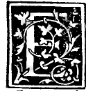

CHAPTER XXXVI¶
How the Tetracedron Is Placed in the Cube.

The second proposition of the fifteenth book (Campanus XV.2) teaches how to inscribe the tetracedron (4 triangular bases) inside the exacedron or cube (6 square bases).
Inscribing the Tetrahedron in the Cube (Campanus XV.2)
In a given cube (exacedron), to inscribe the regular pyramid of four equilateral triangular bases (tetracedron) so that the four vertices of the tetracedron stand at four non-adjacent vertices of the cube, and the six edges of the tetracedron are the six face diagonals of the six square faces of the cube.
Let the given cube have lower square face \(abcd\) and upper square face \(efgh\), with vertical edges \(ae, bf, cg, dh\) (see the marginal diagram
0038.g2.pngon Folio 0038).On the six square faces of the cube, draw six face diagonals meeting at four alternating corners of the cube—namely, draw the diagonal \(ac\) on the lower square \(abcd\), the diagonal \(fh\) on the upper square \(efgh\), and the four lateral diagonals \(af, fc, ch, ha\) on the four vertical squares \(abfe, bcgf, cdhg, daeh\).
Because all six faces of the cube are equal squares, by the penultimate of the first and the fourth of the first all six face diagonals \(ac, fh, af, fc, ch, ha\) are mutually equal, each having its square double the square on the edge of the cube (\(s_{\text{tetra}}^{2} = 2\,s_{\text{cube}}^{2}\)).
These six equal diagonals bound four equilateral triangles (\(afc, fch, cha, haf\)) meeting three by three at the four alternating cube corners \(a, c, f, h\).
Therefore the regular tetracedron \(afch\) is inscribed in the cube, and the square on the edge of the inscribed tetracedron is double (\(2 : 1\)) the square on the edge of the containing cube—which agrees with what we saw in Chapter XXVI and Chapter XXVII, since the same sphere circumscribes both the cube and this tetracedron!